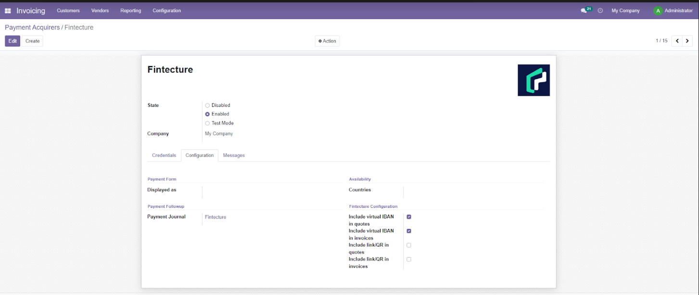
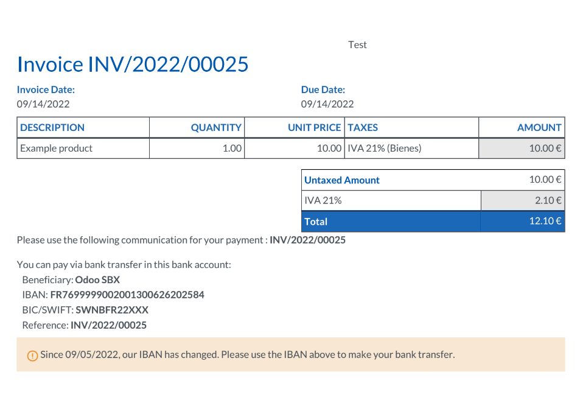

Fintecture helps you integrate a personalized IBAN directly into your invoices or quotes, automating your bank reconciliation.
Fintecture helps you integrate a personalized IBAN directly into your invoices or quotes, automating your bank reconciliation.
97% of B2B payments are made by traditional bank transfer*, notably by integrating the company's bank details directly into the issued invoice. However, this process hampers your performance and generates a lot of manual actions within your accounting teams:
Fintecture helps you to optimize your cash collection by integrating a secure and personalized IBAN in your invoices or your quotes: an immediate time saving for your teams without changing the payment habits of your customers!
Fintecture has developed a plug-in on Odoo (v.15, v.14 and v.13) to enrich your invoices or your quotes with a personalized IBAN (or virtual IBAN) where Fintecture automatically detects the origin of a payment.
1/ Your customer receives his usual quote or invoice with a personalized IBAN
2/ He is automatically notified of a change of bank details in order to use this new
IBAN
2/ all his payments via this new IBAN will be automatically identified
On your side, collected payments are centralized on a single bank account.
You know exactly who is paying you, and you are able to make the right decisions more
quickly.
The status of your payment, for each invoice, is automatically updated in Odoo.
Your "pre-lettered" data is easily exported to follow your usual accounting processes.
Optimize your cash collection by wire transfer, without changing your customers' habits!
STEP 1: The Fintecture module allows multi-company configuration. You can use Fintecture as your payment acquirer for all your companies (legal entities) and configure for each of them your preferences.
STEP 2: When you set up your quotes or invoices in Odoo, you can now include a virtual IBAN Fintecture by only 1 click. 
STEP 3: When your quotes or invoices are issued from Odoo, it will automatically include personalized payment references for each customer (personalized or virtual IBAN). 
STEP 4: hen the customer pays the invoice using this Virtual IBAN, the payment is instantly identified and pre-lettered ; the invoice is automatically processed and settled in Odoo.
Fintecture is pioneering next generation B2B payments, with its own proprietary infrastructure to secure and streamline end-to-end transactions between merchant and buyer. In 2020, a first payment solution was launched: immediate wire transfer, an account-to-account payment technology based on open banking, without financial or technical intermediaries. New products have been progressively created to address all B2B payment use cases, including complex order-to-cash processes.
Today more than 10,000 merchants and 180,000 buyers rely on our payment solutions, including key references on the market (Auchan, Decathlon, Edenred, Bricoman…).
Fintecture is a payment institution supervised and authorized by the Banque de France and the ACPR under the N°17248.
Contact
Interested? Do not hesitate to contact us at
inbounds@fintecture.com